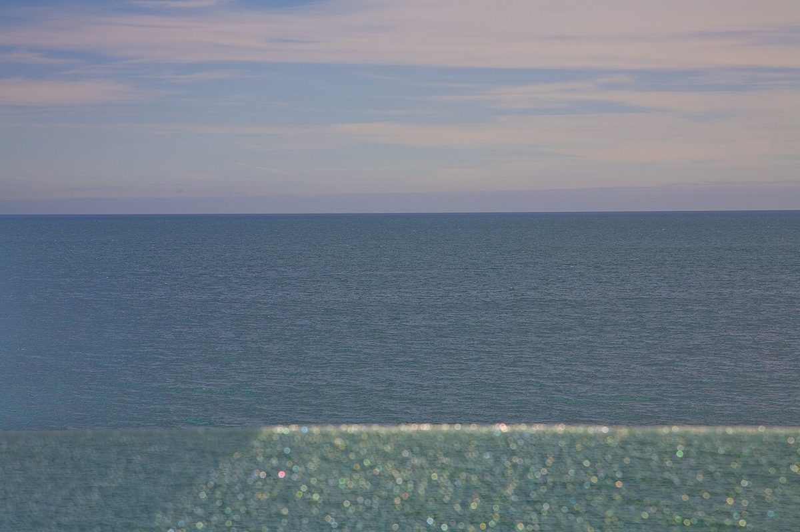

第一条
店のこと
お店について確認できているのは、所在地・電話番号・Instagramのアカウントだけです。
確認できていること
- 店名は「鴎倶楽部」(かもめくらぶ)、業種はパン屋
- 所在地は山梨県富士吉田市下吉田7丁目33-3(〒403-0004)
- 電話番号は0555-22-3900
- Instagramは @kamome3900
- 営業時間・定休日・メニュー・価格・ご予約・駐車場は準備中

想像してみる
「鴎」と「倶楽部」の字から
ここは制作側が想像して書いた部分で、お店の実際の様子・考え・メニューとは関係がありません。
由来は分かりません。制作側は、「鴎」の字から海の水平線を、「倶楽部」の字から人が集まる部屋を思い浮かべました。そこで、水平線の写真と小麦の写真を並べて貼ってみます。
